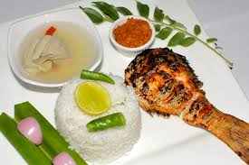
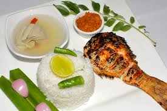

Ilhas Maldivas


Médias Sociais e Econômicas:
| Habitantes | 521.457mil (2021) |
| Receita Anual | 3,49 bilh. € |
| Turistas Anuais | 1 milh. |
| Habitantes | 521.457mil (2021) |
| Receita Anual | 3,49 bilh. € |
| Turistas Anuais | 1 milh. |
A República das Maldivas é um pequeno país insular localizado no Oceano Índico ao sudoeste do Sri Lanka e da Índia. Formada aproximadamente por 1.200 ilhas.
Está entre os melhores lugares do mundo para mergulhar. Tem quase 30 espécies de tubarões, mantas gigante e vida marinha avassaladora.
Os melhores meses para o mergulho são de dezembro a março, é o período em que as águas do mar ficam mais cristalinas.


Malé é a capital das Maldivas e provavelmente o portão de entrada do país. Trata-se de uma cidade portuária com grandes prédios. As principais atividades pra se fazer em Malé é andar pelas ruelas visitando o dia a dia da população local, fora dos holofotes do turismo e caminhar no grande calçadão a beira da praia.


Conectada a poucos minutos por uma ponte de Malé(capital das Maldivas), esta ilha funciona como um "subúrbio". As ruas dessa ilha são amplas e a aparência é mais cuidada do que a capital, devido ao seu tamanho e distância os principais meios de transporte são barcos públicos, táxis e ônibus ligando os principais pontos.


É uma das opções mais acessíveis das Maldivas. Conhecida por suas ondas longas e bem formadas, as acomodações ao seu redo se especializaram em hospedagens voltadas para aqueles que prefere curtir a natureza.

 

É uma sopa de peixe irresistível. Saboreado com Roshi (Chapati das Maldivas), arroz cozido no vapor, cebola, guarnecido com coco ralado e pimenta. O caldo deste prato tradicional das Maldivas é feito a partir da cozedura de várias espécies de atum criando o rico sabor ao prato.


Bolo tradicional que é prepado em todas as casas em ocasiões especiais.O atum fumado é utilizado na preparação deste bolo, que é coberto com gengibre ralado e coco.


Os moradores afirmam que o sabor de uma lagosta perfeitamente cozida é divido e difícil de resistir, então não se esqueça de abster-se desta experiência divina e deliciosa.

As Ilhas Maldivas já foram colônia portuguesa, holandesa e britânica, tendo sua independência em 1965 e a república decretada em 1968. É o país menos populoso e, também, o menor país da Ásia. O arquipélago é composto por 1.196 ilhas, das quais apenas 203 são habitadas.